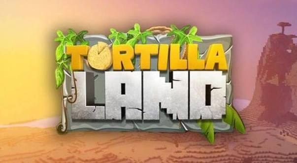
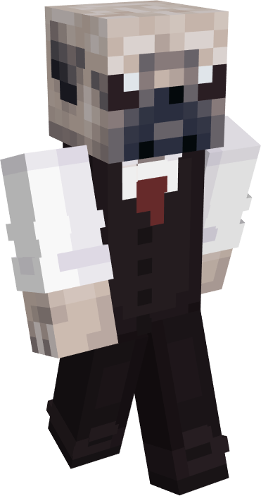

El servidor que juntó a decenas de streamers hispanos para rolear, traicionarse y armar el caos más divertido de Twitch y YouTube.
Un evento de Minecraft ideado por AuronPlay y Perxitaa y montado técnicamente por HeberonYT y JaviDMr10, los mismos detrás de Karmaland. Funciona como los servidores de rol de GTA: cada creador interpreta a su personaje, pero sin rol estricto. Lo que manda son las situaciones cómicas, las traiciones y las jugarretas.
TortillaLand se emitió en directos diarios en el canal de cada participante, así que no tiene episodios con título oficial. Esta es la cronología de sus momentos clave. Toca una tarjeta para ver más.
Dos streamers tuvieron la idea y dos constructores la convirtieron en un servidor.
Las listas oficiales de ambas temporadas. Busca por nombre o filtra por temporada, y toca a alguien para ver su ficha.
Las iniciales sustituyen a las fotos. La lista de la T2 es la de 36 nombres confirmados en el tráiler; hubo cambios durante la emisión.

Nació el 27 de septiembre de 1996 en San Sebastián (San Vicente, El Salvador). Empezó en Twitch en 2015 con GTA, Minecraft y Fortnite y formó parte del reparto anunciado para TortillaLand 2. Falleció el 25 de octubre de 2026 en Monterrey (México), a los 30 años. Las autoridades no han dado a conocer una causa oficial.
“Vuela alto mi Komanche, gracias por llevar a El Salvador siempre contigo”Byron Reyes, su representante
Canción tributo “Comanche v2”, creada por dani_villa. Si estás pasando por un momento difícil, no estás solo: en findahelpline.com encuentras líneas de ayuda gratuitas en tu país.
Deja unas palabras para Komanche. Los mensajes de la comunidad aparecen aquí.